Asteroko banaketa zure atarira
Astero eskualdeko herri guztietatik pasatzen gara. Zure eskaria beti dagokion egunean iristen da, ezeren ardurarik izan gabe.
Edarien handizkako banatzailea ostalaritzarako eta merkataritzarako. Astero Bortzirietako, Malerrekako eta Baztango herri guztiak bisitatzen eta hornitzen ditugu.
Marka hauen banatzaile ofizialak gara
Konfiantza eta kalitatea 1949tik
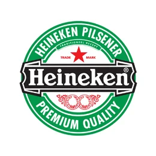
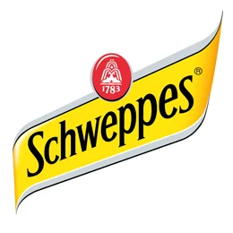
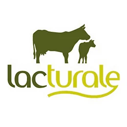
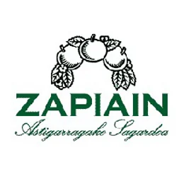
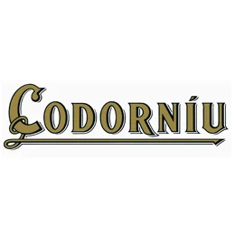
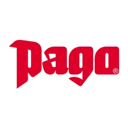
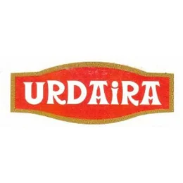
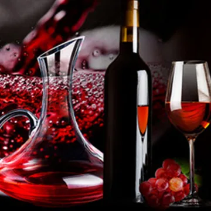
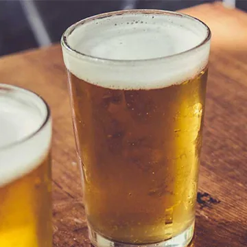
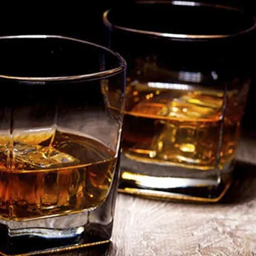
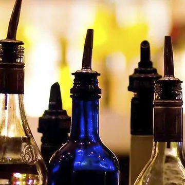
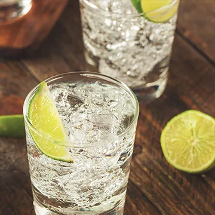
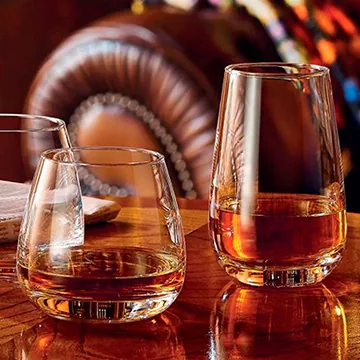
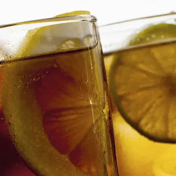
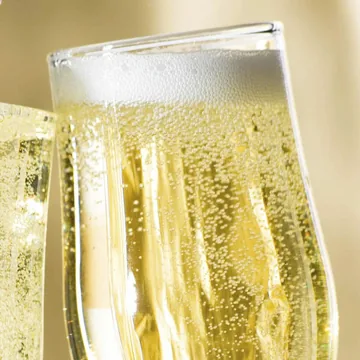
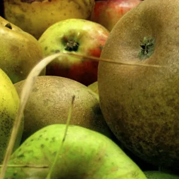
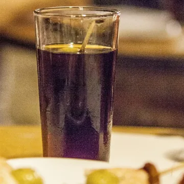
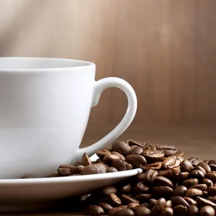
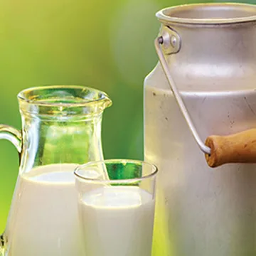
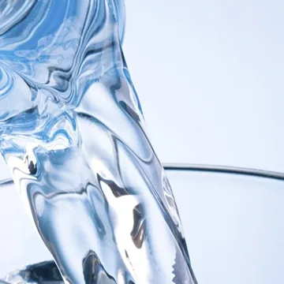
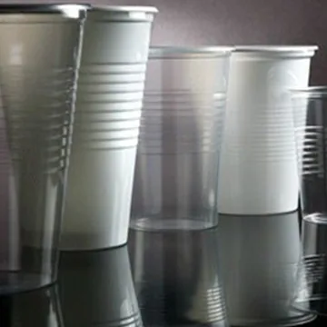
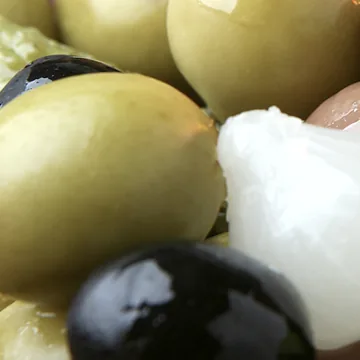
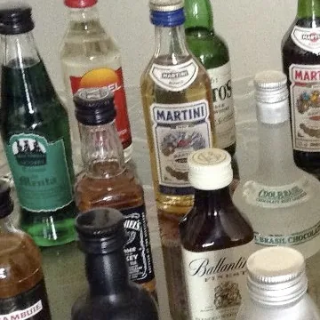
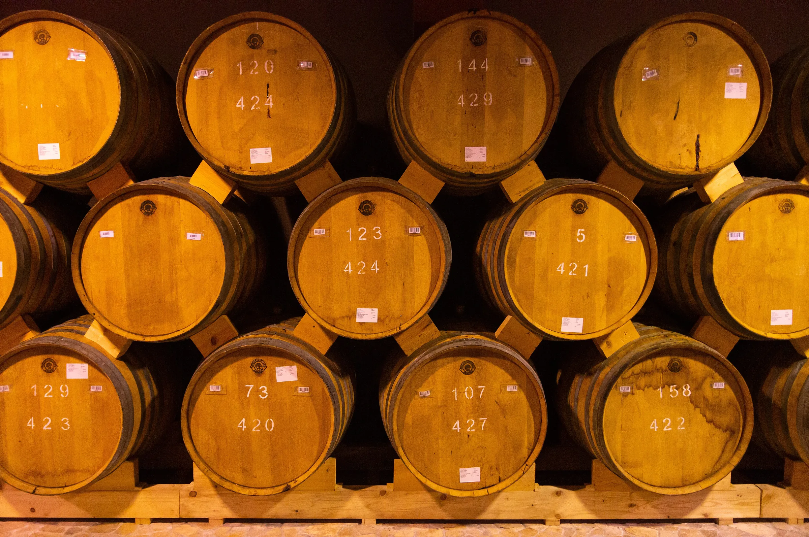
Manuel Taberna S.L. Berako familia-enpresa bat da, edarien handizkako banaketan 1949tik aritzen dena. Eskualdeko taberna, jatetxe eta denda bakoitza ezagutzen dugu, belaunaldiz belaunaldi haien ateetatik sartzen baikara.
Gure banatzaileek eskualde osoa zeharkatzen dute produktuak zure tabernara, jatetxera edo dendara eramanez. Zu zure bezeroez arduratzen zara; gainerakoaz, gu.
Astero eskualdeko herri guztietatik pasatzen gara. Zure eskaria beti dagokion egunean iristen da, ezeren ardurarik izan gabe.
Zure bezeroek eskatzen dituzten markak banatzen ditugu ofizialki: Heineken, Schweppes, Insalus, Lacturale, Zapiain, Codorníu, Pago eta Ur Daira.
Banaketa batetik bestera zerbait behar duzu? Hurbildu Agerrako biltegira, astelehenetik ostiralera 08:00etatik 15:00etara. Ateak zabalik daude.
Asteroko banaketa Nafarroa iparraldeko hiru eskualde hauetako herri bakoitzean.
Bera, Lesaka, Etxalar, Arantza eta Igantzi. Gure etxea: hemen dago biltegia eta hemen hasi zen dena 1949an.
Doneztebe eta haraneko herri guztiak. Asteroko bisita tabernetara, elkarteetara eta merkataritzara.
Elizondo eta Baztango haran osoa, Oronozetik Amaiurrera. Banaketa zehatza astero, baita denboraldi betean ere.
Astero Bortzirietako herri guztiak (Bera, Lesaka, Etxalar, Arantza eta Igantzi), Malerreka eta Baztango harana bisitatzen eta hornitzen ditugu.
Mota guztietako edariak, alkoholdunak eta alkoholgabeak — ardoak, garagardoak, whiskiak, likoreak, freskagarriak, kabak, sagardoa eta txakolina — eta gainera kafea, esnea, ura, olioa, kontserbak, zukuak, edalontziak eta miniaturak. 18 produktu-familia guztira.
Bai. Bidasoa karrika 76an gaude, Beran, astelehenetik ostiralera 08:00etatik 15:00etara. Edozer behar baduzu, ateak zabalik daude.
Deitu 948 631 027 edo 670 598 560 zenbakira, idatzi info@tabernaedariak.eus helbidera edo esan zure banatzaileari asteroko bisitan.